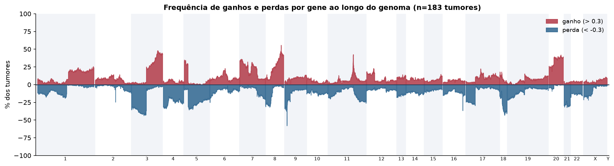
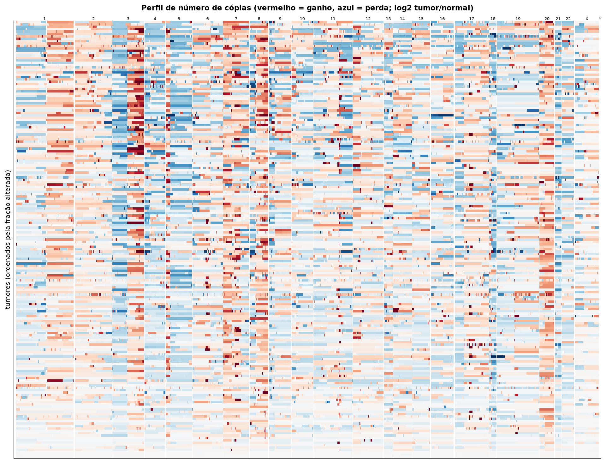
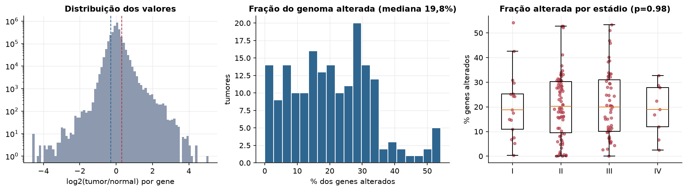
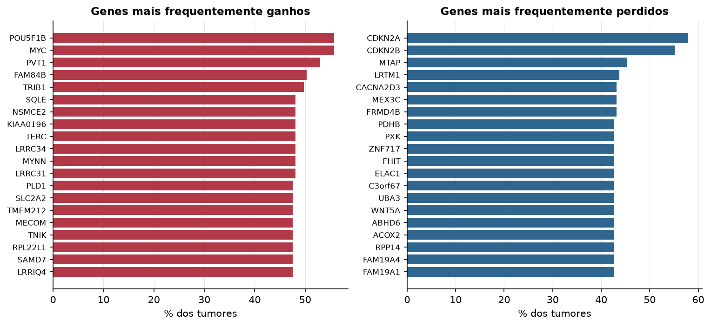

ESCA · Número de cópias (CNV)
Affymetrix SNP6, segmentos whitelisted do PanCanAtlas · gerado em 21/10/2026 21:08
183tumores
17.738genes
19,8%fração alterada mediana
217segmentos/tumor (mediana)
Fonte: SNP6 whitelisted (PanCanAtlas); nível de gene calculado dos segmentos (hg19)
O valor por gene é o do segmento que cobre o meio do gene (log2 tumor/normal, hg19). Sem correção de pureza e ploidia: tumores com pouca célula tumoral têm valores atenuados. Para chamadas discretas (−2 a 2), use o GISTIC2 do PanCanAtlas ou o ABSOLUTE.
Principais resultados
- Mediana de 19,8% dos genes com ganho ou perda por tumor (limiares log2 de 0.3 e -0.3).
- O cromossomo com mais ganhos em média é o 20 (31,4% dos tumores por gene) e o com mais perdas é o 18 (28,9%).
- Genes mais ganhos: POU5F1B (56%), MYC (56%), PVT1 (53%), FAM84B (50%), TRIB1 (50%), SQLE (48%). Genes mais perdidos: CDKN2A (58%), CDKN2B (55%), MTAP (45%), LRTM1 (44%), CACNA2D3 (43%), MEX3C (43%).
- Fração alterada por estádio: Kruskal-Wallis p=0.98.
Paisagem ao longo do genoma


Carga de alterações

Genes recorrentes

Top 25 genes por frequência de ganho
| gene | chrom | % ganho | % perda | média log2 |
|---|---|---|---|---|
| POU5F1B | 8 | 55.7 | 0.5 | 0.447 |
| MYC | 8 | 55.7 | 0.5 | 0.46 |
| PVT1 | 8 | 53 | 1.1 | 0.433 |
| FAM84B | 8 | 50.3 | 0.5 | 0.401 |
| TRIB1 | 8 | 49.7 | 0.5 | 0.387 |
| SQLE | 8 | 48.1 | 0.5 | 0.368 |
| NSMCE2 | 8 | 48.1 | 0.5 | 0.371 |
| KIAA0196 | 8 | 48.1 | 0.5 | 0.369 |
| TERC | 3 | 48.1 | 1.6 | 0.377 |
| LRRC34 | 3 | 48.1 | 1.6 | 0.377 |
| MYNN | 3 | 48.1 | 1.6 | 0.377 |
| LRRC31 | 3 | 48.1 | 1.6 | 0.377 |
| PLD1 | 3 | 47.5 | 1.6 | 0.372 |
| SLC2A2 | 3 | 47.5 | 2.2 | 0.37 |
| TMEM212 | 3 | 47.5 | 1.6 | 0.372 |
| MECOM | 3 | 47.5 | 1.1 | 0.364 |
| TNIK | 3 | 47.5 | 2.2 | 0.366 |
| RPL22L1 | 3 | 47.5 | 1.6 | 0.376 |
| SAMD7 | 3 | 47.5 | 1.6 | 0.375 |
| LRRIQ4 | 3 | 47.5 | 1.6 | 0.375 |
| EIF5A2 | 3 | 47.5 | 1.6 | 0.377 |
| ZNF572 | 8 | 47.5 | 0.5 | 0.365 |
| SEC62 | 3 | 47.5 | 1.6 | 0.378 |
| NDUFB9 | 8 | 47 | 0.5 | 0.354 |
| TATDN1 | 8 | 47 | 0.5 | 0.355 |
Top 25 genes por frequência de perda
| gene | chrom | % ganho | % perda | média log2 |
|---|---|---|---|---|
| CDKN2A | 9 | 0.5 | 57.9 | -0.704 |
| CDKN2B | 9 | 0.5 | 55.2 | -0.622 |
| MTAP | 9 | 2.2 | 45.4 | -0.441 |
| LRTM1 | 3 | 1.1 | 43.7 | -0.279 |
| CACNA2D3 | 3 | 1.1 | 43.2 | -0.253 |
| MEX3C | 18 | 3.3 | 43.2 | -0.264 |
| FRMD4B | 3 | 2.2 | 43.2 | -0.239 |
| PDHB | 3 | 1.6 | 42.6 | -0.243 |
| PXK | 3 | 1.6 | 42.6 | -0.243 |
| ZNF717 | 3 | 2.7 | 42.6 | -0.241 |
| FHIT | 3 | 1.1 | 42.6 | -0.284 |
| ELAC1 | 18 | 3.3 | 42.6 | -0.265 |
| C3orf67 | 3 | 1.1 | 42.6 | -0.246 |
| UBA3 | 3 | 2.2 | 42.6 | -0.235 |
| WNT5A | 3 | 1.1 | 42.6 | -0.245 |
| ABHD6 | 3 | 1.6 | 42.6 | -0.243 |
| ACOX2 | 3 | 1.1 | 42.6 | -0.245 |
| RPP14 | 3 | 1.6 | 42.6 | -0.243 |
| FAM19A4 | 3 | 2.2 | 42.6 | -0.235 |
| FAM19A1 | 3 | 2.2 | 42.6 | -0.235 |
| TMF1 | 3 | 2.2 | 42.6 | -0.235 |
| ERC2 | 3 | 1.1 | 42.6 | -0.257 |
| ARL6IP5 | 3 | 2.2 | 42.6 | -0.235 |
| DNASE1L3 | 3 | 1.6 | 42.6 | -0.243 |
| KCTD6 | 3 | 1.1 | 42.6 | -0.245 |